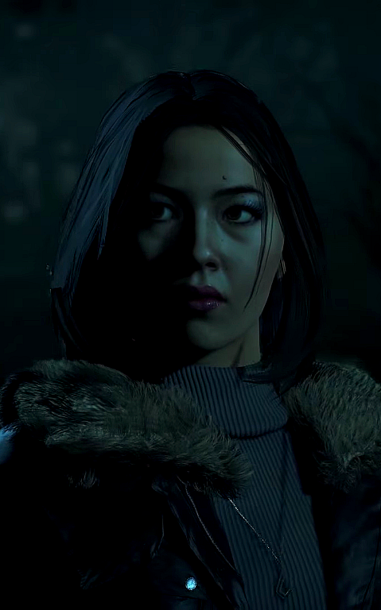

Jogabilidade
Until Dawn foi desenhado para poder ser jogado várias vezes para que os jogadores possam entender o jogo na sua totalidade. A história dura cerca de nove horas de cada vez que se joga e as mecânicas irão utilizar um novo sistema chamado "Efeito Borboleta" em que cada escolha feita terá grandes consequências nunca antes vistas no desenrolar da história. Ao longo do jogo, os jogadores farão decisões difíceis com dilemas éticos e morais, como por exemplo sacrificar uma personagem para poder salvar outra. O "Efeito Borboleta" apaga a linha entre o correto e o incorreto, e é possível manter os oito personagens vivos (e até todos mortos), permitindo diferentes caminhos e cenários criando assim vários finais diferentes. O mecanismo de interação com a aplicação pode ser feito de três formas: com o DualShock 4 utilizando os botões, com o DualShok 4 utilizando o sensor de movimentos do mesmo e, sem a utilização de qualquer dispositivo remoto, através da PlayStation Camera, pelos movimentos corporais do jogador (algo semelhante aos jogos jogados através do Kinect, do Microsoft Xbox). Until Dawn tem um modo de auto-salvar muito restrito e, não permite ao jogador aceder ao arquivo da gravação; isto para prevenir que os jogadores se sintam arrependidos de alguma decisão que fizeram no jogo e a possam alterar. Também não há regulação da dificuldade no que toca à resposta do computador. A dificuldade é auto-ajustada de acordo com as decisões e o ponto da história em que o jogador está; por exemplo: o tempo de resposta aos "Quick-time Events" é menor quando um personagem se encontra numa cena de perigo do que se a mesma se encontrar numa situação calma. O nome do jogo Until Dawn em inglês significa "Até o amanhecer", e já diz até que tempo terminará a história, isso o jogador verá que é verdade ao decorrer do jogo. O jogador deverá recolher o máximo de colecionáveis de vários tipos com todos os personagens por forma a poder perceber a história.
SamSamantha "Sam" Giddings (Hayden Panettiere) - Sam, descrita no jogo como aplicada, atenciosa e aventureira, é a melhor amiga de Hannah Washington. Sam possui 19 anos de idade. Ela é a "mãezona" do grupo, sendo a mais responsável e amigável do grupo. Ela e Josh parecem sentir grandes sentimentos um pelo outro, já que passam grande parte do tempo juntos, e às vezes, "flertando". Sam ama animais, e tem uma grande habilidade atlética, e uma grande habilidade em escalada. Sam é uma dos quatro únicos personagens á não participarem da pegadinha contra Hannah, sendo os outros Beth, Chris e Josh. Ela é uma das únicas personagens a morrer no último capítulo, o capítulo 10. Ela tem duas maneiras de morrer, e as duas envolvem o Wendigo perfurando sua barriga com seu braço. Sam só morre se ela se mover no segundo e no último "não se mova". Se Sam sobreviver, ela irá falar:
|
|
JoshJoshua "Josh" Washington (Rami Malek) -Josh, descrito no jogo como complexo, atencioso e amável, é o irmão mais velho de Beth e Hannah Washington. Ele é o mais velho do grupo, possuindo 20 anos de idade. Ele é um rapaz brincalhão e bem-humorado, e gosta fazer pegadinhas. Ele é a figura misteriosa nas consultas com o Dr. Hill, fazendo muitas vezes o jogador pensar que é o próprio jogador a figura, já que é ele quem responde as perguntas. Josh é o psicopata do jogo, sendo que o que ele fizera foi vingar-se pela pegadinha que o grupo fez contra suas irmãs. Ele e Chris são melhores amigos, e Chris fica com pena quando Mike ameaça atirar em Josh, dando a opção de desarmar Mike. Josh tem uma maneira de morrer, no capítulo 10. Se Mike e Sam não encontrarem o diário que Hannah escreveu quando estava nas minas, Josh não reconhecerá que o Wendigo é Hannah, e acabará tendo a sua cabeça esmagada. Se ele sobreviver, ele reconhecerá o Wendigo de Hannah, que o levará para longe, e Josh não será resgatado pela policia, quando ele estiver lá, ele irá comer a cabeça do cara do lança chamas, e irá iniciar sua transformação em um Wendigo. A policia irá encontrar Josh, e ele atacará a policia. |
|
|  |
EmilyEmily "Em" Davis (Nichole Bloom) - Emily, descrita no jogo como inteligente, competente e persuasiva, é uma jovem mulher asiática-americana, que possui 19 anos. Emily é uma garota de língua rápida e inteligência afiada, e sempre tem um truque na manga. Ela é considerada a "mala sem alça" do grupo, pois reclama de tudo, o jogo inteiro. Ela é inteligente, esperta e manipuladora, e em todo o momento consegue manipular Matt. Ela é a ex-namorada de Michael Munroe (Mike), e é a atual namorada de Matt. Ela era a melhor amiga de Jessica, mas, como ela se tornou a nova namorada de Mike, elas começaram a se desprezar. Ela é a personagem que mais encontra pistas sobre o desaparecimento de Beth e Hannah, e inclusive, encontra a cabeça de Beth. Emily é a segunda personagem a ter mais maneiras de morrer, sendo a outra personagem, Chris. Ela pode morrer no capítulo 8, se ela não conseguir escapar do Wendigo a tempo, o Wendigo á pegará pela cabeça, e arrancará seus olhos. A outra maneira ainda é no capítulo 8, se ela continuar na esteira, e não conseguir pular e nem se apoiar, ela cairá em um triturador de minerais, e terá suas pernas esmagadas. A terceira maneira, ainda no capítulo 8, será se o jogador escolher, como Mike, atirar em Emily (se ela for mordida pelo Wendigo), Mike vai atirar em seu olho, matando-a. E a última maneira é no capítulo 10, se Sam ligar o interruptor, ela e os demais sobreviventes (que estiverem no chalé), morrerão queimados. Se Emily sobreviver, dependendo das escolhas do jogador, ela poderá falar:
|
MattMatthew "Matt" Taylor (Jordan Fisher) - Matt, descrito no jogo como ativo, motivado e ambicioso, é um jovem homem afro-americano, possui 18 anos. Ele é conhecido por suas habilidades atléticas, e seu grande coração (principalmente com Emily). Ele é o novo namorado de Emily, ele obedece todas as ordens e exigências de Emily. Emily trata ele muito mal, sendo que a própria fez duas regras : Primeiro, Emily sempre tem razão. Segundo, nada mais importa, porque Emily sempre esta correta, mesmo estando errada. Matt é o quarto personagem com mais formas de morrer. A primeira forma é no capítulo 6, se Matt escolher atacar os cervos, ele será empurrado para fora do penhasco, e se ele não conseguir se apoiar, ele vai cair e bater a cabeça em uma pedra. A segunda forma, ainda no capítulo 6, é que se ele escolher duas vezes "salvar a Emily", a torre vai despencar e ele cairá em uma caverna com um Wendigo, e o Wendigo colocará a boca de Matt em um gancho, matando-o. E a (as) última forma é no capítulo 10. Se ele se mover em algum dos "não se mova" o Wendigo esmagará o seu rosto, e matará Jessica (se ela estiver viva). Se Matt sobreviver, dependendo das escolhas, ele falará:
|
|
ChrisChristopher "Chris" Hartley (Noah Fleiss) - Chris, descrito no jogo como metódico, protetor e bem-humorado, é um jovem de 19 anos. Ele é o nerd do grupo, e leva esse papel muito a sério. Ele tem uma queda por sua amiga Ashley, e ela também sente o mesmo, mas nenhum deles tem coragem de dar o primeiro passo. Ele também é o melhor amigo de Josh. Chris e Ashley encontram a maioria das pistas do homem misterioso. Chris é o personagem com mais formas de morrer, num total de seis vezes. A primeira é no capítulo 8, se ele errar algum dos tiros no Wendigo, o Wendigo arrancará a sua cabeça. A segunda forma, ainda no capítulo 8, é que se ele escolheu atirar em Ashley (no capítulo 7) em vez de atirar em si mesmo, ela não vai abrir a porta para ele fugir do Wendigo, e posteriormente, matando-o. A terceira forma é no capítulo 9, se Ashley deixou Chris para trás, e ela foi atrás da voz de "Jessica" (que na verdade é um Wendigo), independentemente do caminho que ele escolher, ele vai morrer. Se ele escolher "seguir a voz", ele vai encontrar o gorro de Ashley no chão, e quando ele abrir o alçapão, o Wendigo vai pular em cima dele, e arrancará sua cabeça. Se Chris escolher "juntar-se ao grupo", o Wendigo o agarrará pelo teto, e o decapitará. Se Chris sobreviver, ele vai falar:
|
|
AshleyAshley "Ash" Brown (Galadriel Stineman) - Ashley, descrita no jogo como intelectual, curiosa e franca, é uma garota de 18 anos. Ela é conhecida por seus cabelos ruivos, e sua roupa colorida. Ashley é a garota nerd do grupo, ela e Chris vivem juntos, pois ambos são apaixonados um pelo outro, mas nenhum deles tem coragem de dar o primeiro passo. Ashley e Chris encontram a maioria das pistas sobre o homem misterioso. Ashley é uma personagem com vária formas de morrer. A primeira forma é no capítulo 9, se Ashley escolhe "investigar voz" ela vai se deparar com um alçapão, se ela abri-lo, o Wendigo vai aparecer e arrancar a sua cabeça. A segunda forma é no capítulo 10, se Chris ou Emily tiverem morrido, e Sam tiver se mexido no primeiro "não se mova", o Wendigo vai ir em direção a Ashley, e vai arrancar seus olhos. E a última forma é no capítulo 10, se Sam ligar o interruptor, Ashley e os demais sobreviventes (que estiverem no chalé) vão morrer queimados. Se Ashley sobreviver, ela vai dizer:
|
|
MikeMichael "Mike" Munroe (Brett Dalton) - Mike, descrito no jogo como inteligente, determinado e persuasivo, é o líder de turma do seu colégio, Mike tem 19 anos. Mike é o ex-namorado de Emily, e atual namorado de Jessica. Mike é muito inteligente e conquistador, pois tudo o que ele quer, ele conquista. Ele é o personagem que encontra mais pistas sobre o caso de 1952. Ele é "rival" de Matt, pois Matt acha que Mike dá em cima de Emily (mesmo namorando Jessica). Mike tem duas formas de morrer. A primeira é no capítulo 10, se Sam escolher ligar o interruptor, em vez de salvar Mike, ele e os demais sobreviventes (que estiverem no chalé) vão morrer queimados. A última forma é no capítulo 10, se Sam se mover no primeiro não se mova, Mike será incapacitado de sair do chalé, e quando todos saírem do chalé, ele ligará um isqueiro e irá se matar junto com os Wendigos. Se Mike sobreviver, ele vai falar:
|
|
JessicaJessica "Jess" Riley (Meaghan Jette Martin) - Jessica, descrita no jogo como confiante, ingênua e irreverente, é a nova namorada de Mike, Jessica tem 18 anos de idade. Jessica era a melhor amiga de Emily, mas, atualmente, elas se desprezam. Sua inteligencia não é o seu ponto forte, mas ela conquista qualquer um com sua beleza. Jessica encontra apenas um totem, mas se Matt estiver vivo, ele encontra o totem, fazendo Jessica ser a única personagem a não encontrar nenhuma pista e nenhum totem (possivelmente). Jessica é a segunda personagem com mais formas de morrer, perdendo apenas para Chris. Ela pode morrer no capítulo 4, se Mike não arriscar os atalhos, e errar mais de quatro Quick-Time-Events, ele encontrará Jessica sem seu queixo, no elevador. As outras formas são no capítulo 10, se ela escolher "tentar correr", o Wendigo irá alcança-la e arrancará seu queixo. A outra forma é que se ela se mexer nos "não se mova", o Wendigo irá matar ela e Matt (se ele estiver vivo). E a última forma é que se Matt escolher "abandonar Jessica", o Wendigo irá mata-la. Se Jessica sobreviver, ela vai falar:
|
|
Hannah e BethHannah é a segunda filha da família Washington, sendo a irmã gêmea de Beth e a irmã mais nova de Josh. Hannah era melhor amiga de Sam, que foi a única que não participou da brincadeira. Parecendo ser bastante ingênua, Hannah desesperadamente se apaixona pelo seu amigo Mike, a quem ela especificamente espera ver quando Josh e Beth convidam seus amigos para o chalé para um fim de semana divertido. Até então, revelou-se que tinha terminado o último ano do ensino médio. Hannah, juntamente com Beth, desapareceu em fevereiro de 2014. A polícia procurou altos e baixos, mas apesar de seus melhores esforços, as irmãs ainda estão desaparecidas, presumidas mortas. Beth é a terceira filha da família Washington, sendo a irmã gêmea de Hannah e a irmã mais nova de Josh. Beth é uma indivídua atenciosa e protetora, que parece ser sofisticada e cautelosa, ao contrário de sua irmã mais ingênua. Beth, junto com Hannah, desapareceu em fevereiro de 2014. A polícia procurou altos e baixos, mas, apesar dos melhores esforços, as irmãs ainda estão desaparecidas, presumidas mortas. |
|
Dr. HillO Dr. Hill foi treinado como psiquiatra antes dos eventos de Until Dawn. Algum tempo antes do encontro de um ano dos sobreviventes, ele teve várias sessões de terapia com o Psicopata. Eventualmente, revelou-se que o Dr. Hill no jogo é a alucinação de Josh, que teve sessões com ele após o desaparecimento de Hannah e Beth. Josh tem uma longa história com o Dr. Hill antes dos eventos do desaparecimento de Hannah e Beth, durante o qual recebeu várias doses de remédios diferentes, algumas das quais só funcionaram por um curto período de tempo. Antes que eles pudessem encontrar a medicação certa para Josh, ele ficou muito pior quando Josh parou de tomá-los. Desconhece-se como é o verdadeiro Dr. Hill, pois é muito provável que as percepções de Josh sobre o homem sejam torcidas por sua própria paranoia. No entanto, com base nos textos trocados entre os dois, pode-se presumir que ele é realmente muito amável e preocupado com seus pacientes, e está em primeiro nome com Josh. |
O PsicopataO Psicopata é o primeiro antagonista principal introduzido no jogo. Ele segue e ridiculariza o grupo de amigos durante a instalação de armadilhas semelhantes a franquia de filmes Jogos Mortais, que se assemelham a antagonistas de filmes de terror clássicos. O Psicopata é mostrado como tendo graves problemas psicológicos, graus de paranoia, alucinações, sentimentos de solidão e isolamento. Ele parece amar a tortura para a maioria dos protagonistas. Ele também parece ser um ser semelhante a um assediador, antes de poder seguir sua natureza de tortura divertida. |
|

|
WendigoEles eram seres humanos que foram alterados por um espírito nativo-americano, se transformando em monstros canibais depois de comer a carne de outros humanos por causa da fome. Os Wendigos são bastante horríveis na aparência. Eles exibem a desfiguração da coluna vertebral, dando-lhes uma aparência parecida com uma corcunda. Os dentes tornam-se mais afiados e desfigurados; Sua visão muda, fazendo com que eles tenham visão que é amplamente influenciada pelos movimentos. Seus membros se tornam muito mais longos, dando-lhes a capacidade de subir paredes e fazer saltos pequenos em diferentes pontos em um piscar de olhos.
As lendas originais do Wendigo se originaram das tribos das Primeiras Nações que estavam presentes no Monte Madahee dos anos 1400 até a década de 1850. Os Cree respeitaram profundamente a montanha e sua natureza. Acreditando que seria uma má sorte ferir um animal nesta montanha sagrada, eles caçariam em outro lugar. Eles acreditavam que prejudicar a montanha de qualquer maneira trariam uma terrível maldição com ela.
Os Wendigos são conhecidos por ter alguns padrões de comportamento estabelecidos. Eles muitas vezes acompanham suas presas durante várias horas. Parece que eles gostam de caçar presas sozinhas em vez de em pacotes. Eles são mostrados para ter grandes habilidades predatórias. Eles não parecem perder a humanidade por completo, pois podem usar alguns truques semelhantes a humanos para atrair suas presas. Outro exemplo disso é como Hannah nunca mata diretamente Mike, sugerindo que algum de seu carinho para ele permanece. Ela também pode poupar Josh de sua morte, se ele a reconhecê-la.
|
Montanha BlackwoodA Montanha Blackwood (coloquialmente chamada de Monte Washington), é uma grande montanha situada nas Montanhas Rochosas, na fronteira de duas províncias canadenses, Alberta e Colúmbia Britânica. Os eventos de Until Dawn ocorrem na montanha.
Há um fluxo de montanha que flui para uma cachoeira e um rio. A montanha é fortemente arborizada e é rica em recursos, pois há uma mina, localizada no coração da montanha adentro para acessar seus depósitos de estanho e rádio.
História1893
Anos 1920
1952
Anos 1990
Fevereiro de 2014
1-2 de Fevereiro de 2015
|
|
Blackwood PinesBlackwood Pines é um nome coletivo para uma comunidade, possivelmente não incorporada, na fronteira da duas províncias canadenses, Colúmbia Britânica e Alberta. É a localização da propriedade Washington, o Sanatório Blackwood e as antigas minas do noroeste, e é onde todas as ações de Until Dawn ocorre. Inclui também um hotel/resort parcialmente demolido. A comunidade está situada numa área florestal e montanhosa em torno da montanha Blackwood. A comunidade também hospeda uma estação de rádio, a estação de rádio das Montanhas.
HistóriaA história conhecida do Monte Madahee remonta aos anos 1300 quando a exploração européia inicial revelou que era território de várias tribos na Nação Indígena Norte-Americana. Depois de centenas de anos de paz relativa, a explosão da mineração da década de 1850 trouxe hordas de mineração com ambição nos olhos e um sonho de ter sorte.
|
|
Chalé WashingtonA Propriedade Washington (conhecido coloquialmente como "O Chalé Washington") é uma grande mansão de estilo chalé construída na montanha Blackwood. A mansão serve como o principal local em que ocorrem a maioria dos eventos em Until Dawn. O chalé Washington foi construído no final da década de 1990 pelo magnata de filmes Bob Washington, para servir como uma casa de férias para sua família. A própria casa, ao mesmo tempo que possui uma cabana de madeira / exterior do chalé, é uma casa artística com um interior contemporâneo equipado com múltiplas lareiras e acessórios modernos. A mansão aparece pela primeira vez durante o prólogo em que ocorre a brincadeira. Após o desaparecimento de Hannah e Beth, a propriedade tornou-se uma cena do crime e uma investigação policial completa foi conduzida em torno e na mansão. Em um momento desconhecido, a investigação cessou e o caso não resolvido foi aberto.
|